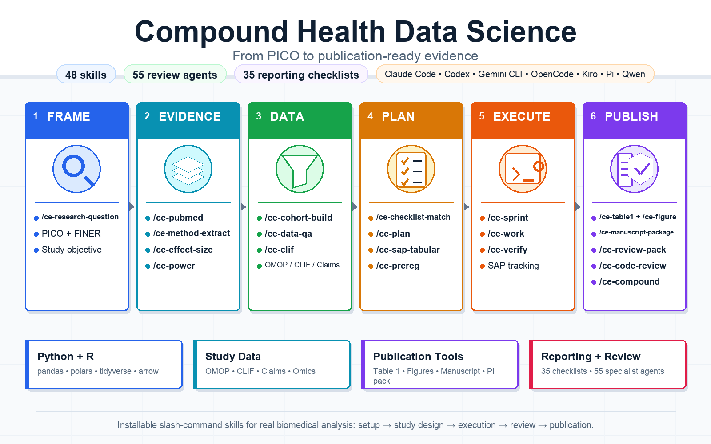
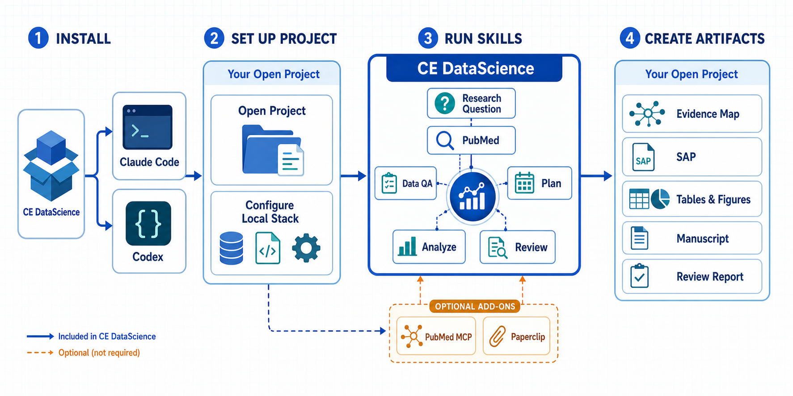
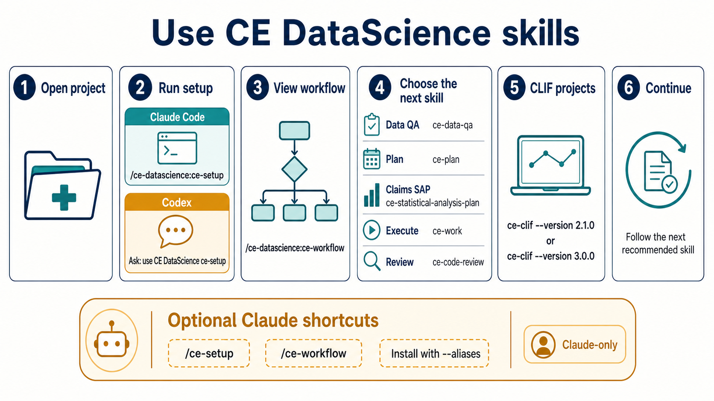

Compound engineering workflows for computational science, statistical review, reproducibility, and reporting compliance.



Clone the repository, run the installer for your agent, restart the agent, and open the project or study directory where you want the plugin to work.
git clone https://github.com/sajor2000/ce-datascience.git ~/ce-datascience
cd ~/ce-datascience
bash install.sh claude --aliases
claudeAfter Claude Code restarts, configure the open project and view its workflow:
/ce-datascience:ce-setup
/ce-datascience:ce-workflow
The optional aliases installed above also allow /ce-setup and
/ce-workflow.
git clone https://github.com/sajor2000/ce-datascience.git ~/ce-datascience
cd ~/ce-datascience
bash install.sh codex
codex
Restart Codex, open /plugins, install CE
DataScience, restart again, and start a new task in the target
project. Ask Codex to use the CE DataScience ce-setup skill,
then the ce-workflow skill. The setup guide includes Windows,
offline, and additional-agent instructions.
pi install npm:pi-subagents
pi install npm:pi-ask-user
bun run src/index.ts install ./plugins/ce-datascience --to pi --pi-home "$HOME/.pi/agent"
Restart Pi, open the target project, then invoke ce-setup
with Pi's skill interface. The setup skill first shows a concise detected
profile and lets the user continue, adjust one field, or open the full
survey.